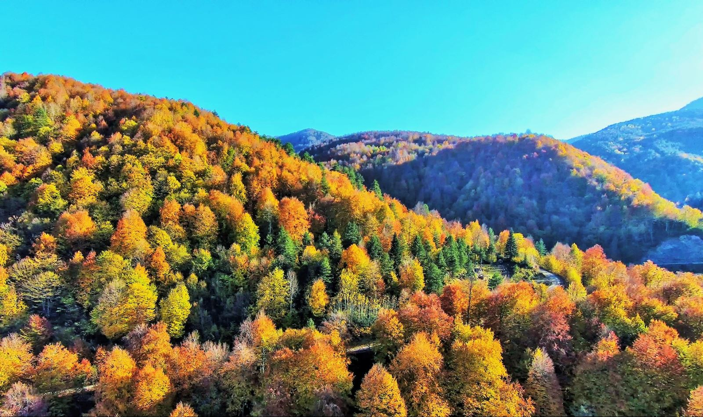
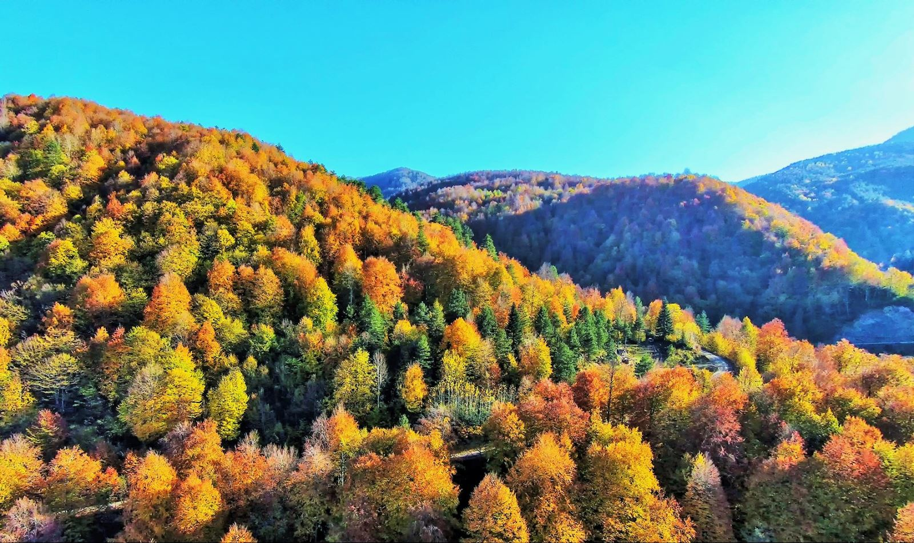

.png)
DÜZCE REHBERİ - Düzce'yi Keşfedin!
Merhaba Düzce severler! Düzce Rehberi'ne hoş geldiniz, şehrimizin eşsiz güzelliklerini, tarihi zenginliklerini ve keyifli mekanlarını keşfetmeye hazır olun. Bu platform, Düzce'nin en güncel ve kapsamlı rehberini sunarak şehrimizin zengin kültürünü ve doğal güzelliklerini sizlere taşıyor.
🏰 Tarihi ve Kültürel Keşifler: Düzce'nin tarihini ve kültürünü keşfetmek isteyenler için özenle seçilmiş tarihi mekanlar, müzeler ve festivaller hakkında bilgiler içeriyoruz. Düzce Kalesi, Konuralp Müzesi ve diğer tarihi yapılar sizleri bekliyor.
🌳 Doğal Güzellikler: Düzce'nin muazzam doğal güzelliklerini yakından görmek isteyen doğaseverler için özel rotalar ve piknik noktaları önerileri sunuyoruz. Gölyaka, Akçakoca ve Yığılca gibi eşsiz doğa bölgelerini keşfetmek için rehberimizi inceleyin.
🍽️ Lezzet Durakları: Düzce'nin yöresel lezzetlerini tatmak isteyenlere özel olarak seçilmiş restoranlar, kafeler ve yöresel mutfakları tanıtıyoruz. Yöresel lezzetlerle tanışın, yerel tatları keşfedin.
🎓 Eğitim ve Kültür: Düzce'nin eğitim alanındaki önemli kurumlarına ve kültür etkinliklerine dair bilgiler sunuyoruz. Düzce Üniversitesi'nin sunduğu imkanlar ve kültür-sanat etkinlikleri ile ilgili güncel haberlere ulaşın.
Düzce Rehberi, şehrimizin her yönünü kapsayan kapsamlı bir kaynaktır. Siz de Düzce'yi en iyi şekilde keşfetmek ve bu güzellikleri yaşamak istiyorsanız, Düzce Rehberi sizin yanınızda!
Düzce'yi yaşamak için en iyi rehber sizinle! Hadi Düzce'yi birlikte keşfedin!
 
